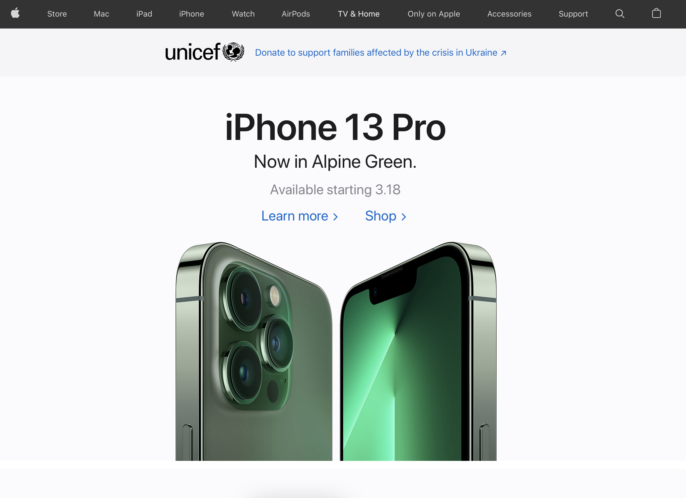
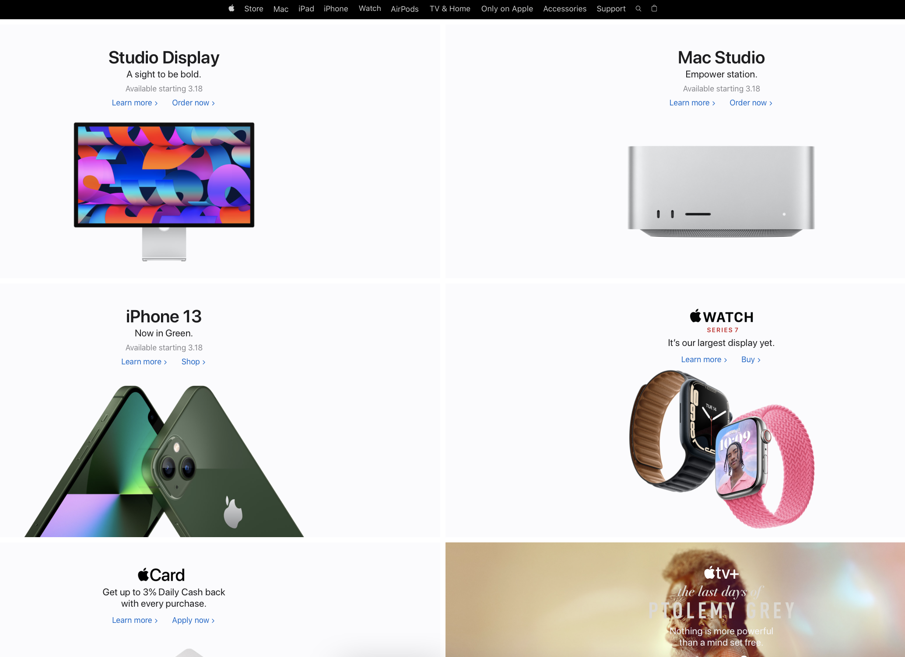
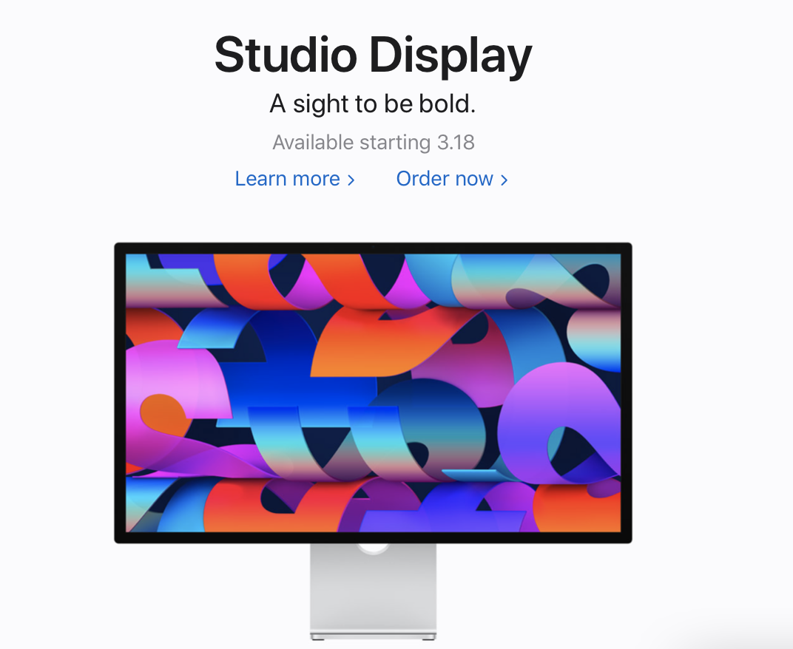
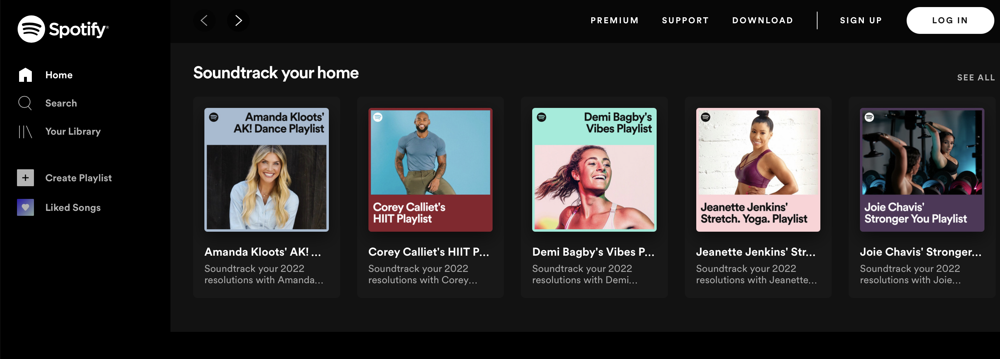
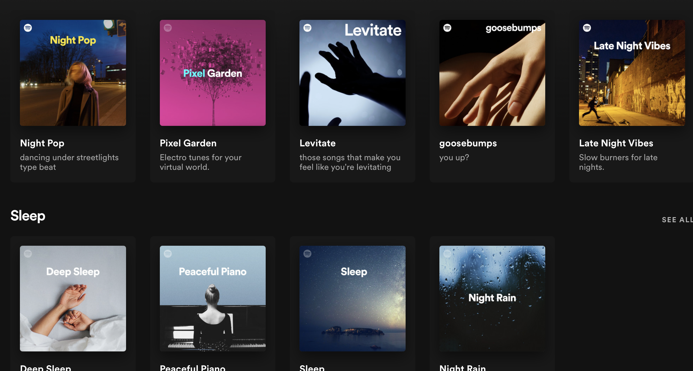
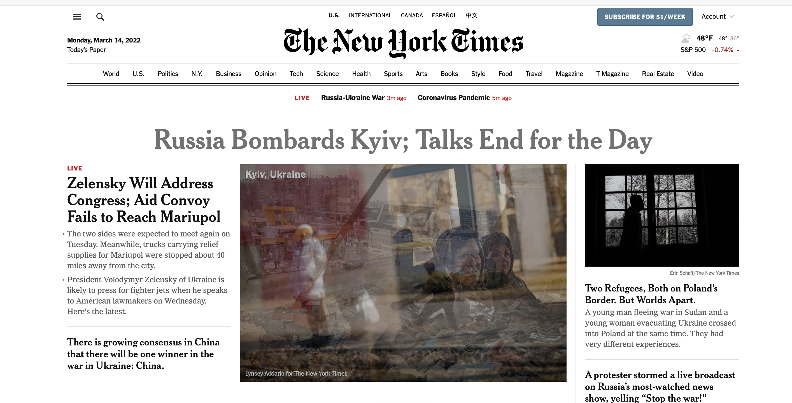
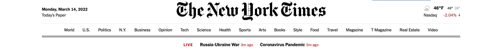
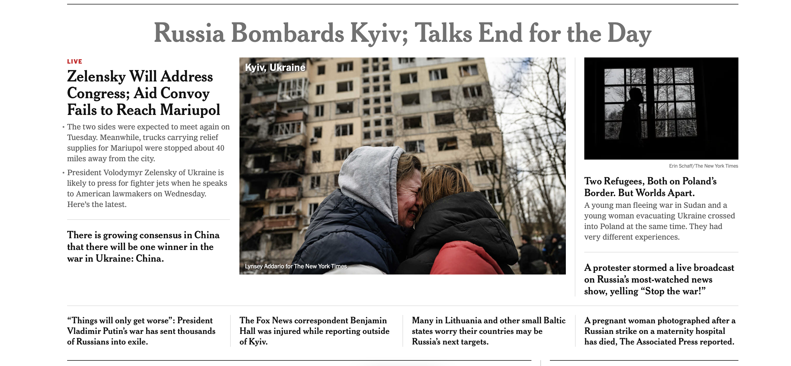
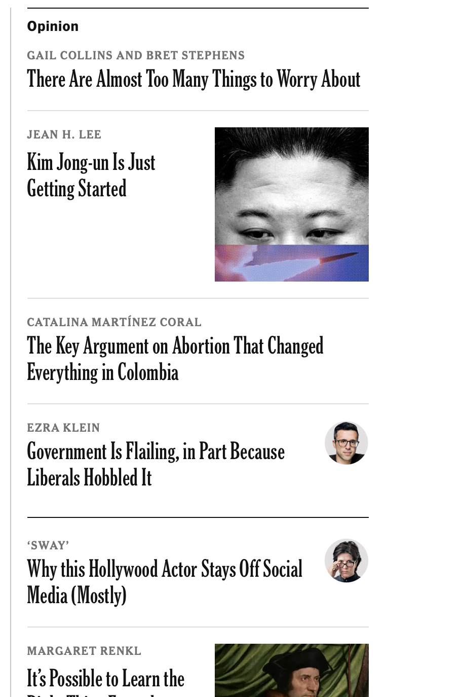

Design Elements Homework
Navigation:
Contrast,
Repetition,
Allignment,
Proximity
I think that Apple.com is a great example of Contrast and Similarity because it uses
them to
emphesize viewers' attention to the product but also clearly show information
about details and prices
-
Apple uses different shades of grey to separate parts of the websites:
Navigation, Unicef anouncemnet, product info.

- Apple's product photos are much brighter than other elements of the website
and this drags viewers' attention.

- Apple uses font contrast to present the Product's Name, its new slogan,
additional info about release date, and links for more info.

I think that 1inch.io uses repetition, patterns, and rhythm to create a very nice website
-
All of the colors on the page are neon and glowing.
-
All of the links to the detailed pages about products or feaures follow
the similarly styled boxes.
- There is a rhythm on the page from the way it switches the order of images
while scrolling.
- There is a rhythm on the page by the way it changes alignment from
2 columns to 1 column.
I think that spotify uses clear alignment on its webpage.
- Separating areas
- Allignment is used to separate sidebar, navigation, and content region.

- Structure of playlist topics
- There are at most 5 playlists that can be fit on the page and this adds
a structre to playlists from different topics.

- Song allignment
- It is simple to navigate through the songs within a playlist.
List of songs is structured as a table.
I think that newspapers need to work with proximity very well
because they need to fit a lot of information on a page
-
They use a lot of white space to separate sections.

- At the top they have the most basic important info such as navigation, today's date(on the left),
live events(in the middle), weather and stock market on the right.

- Main topic of the day is on the fold in the center and news are surrounding the main picture.

- There is a separate section "Opinion" on the right side of the page where
journalist's articles are posted, separate from the news section.
